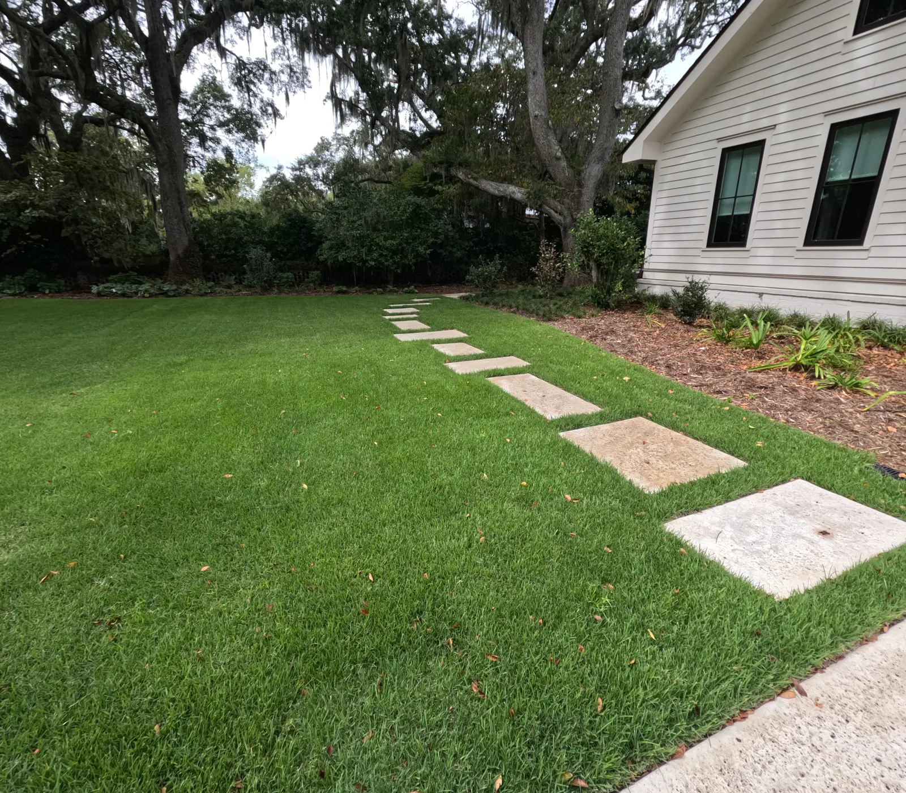
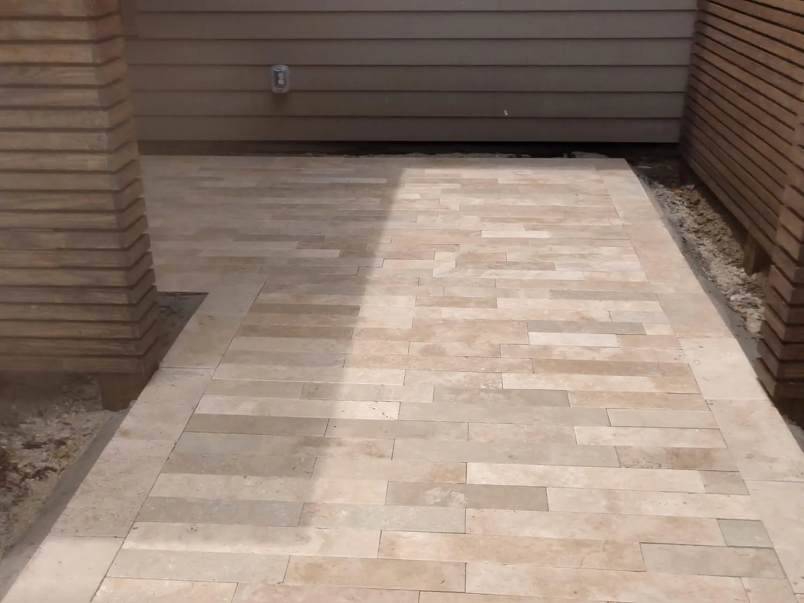
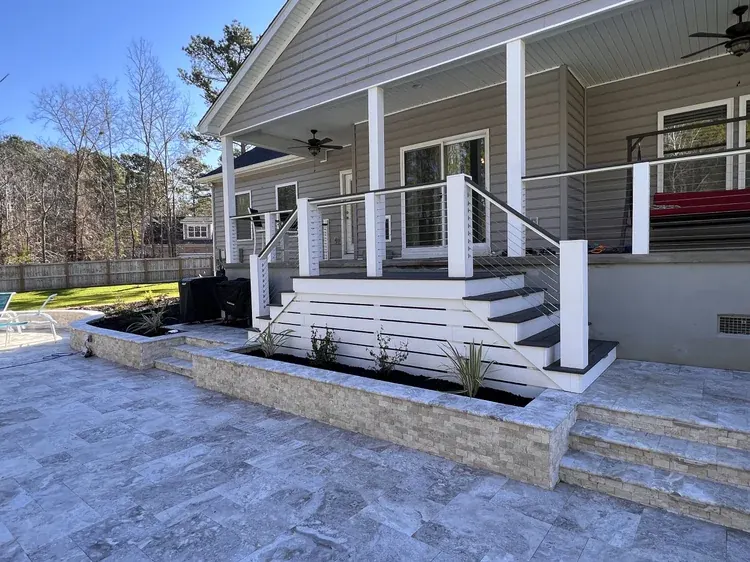

Hardscaping in Charleston: The Ultimate Design & Material Guide
In a city as architecturally rich and naturally beautiful as Charleston, the connection between home and garden is seamless. It’s a place where outdoor living is not just a seasonal activity but a year-round lifestyle. While lush gardens and manicured lawns are the heart of a Lowcountry landscape, the bones that give it structure, function, and enduring elegance are found in its hardscaping. From classic brick patios that echo the city’s historic charm to modern concrete pool decks perfect for soaking up the summer sun, hardscaping is the art of shaping your outdoor world.
If you’ve been dreaming of transforming your yard into a more beautiful, functional, and valuable outdoor living space, you’re in the right place. Cramer’s Landscaping already holds multiple rankings for hardscaping-related keywords, demonstrating a recognized authority in this space. This guide is designed to consolidate that authority, providing you with a comprehensive look at hardscaping in Charleston and inspiring you to create the outdoor oasis you’ve always wanted.
This ultimate guide will explore the transformative power of hardscaping, from its significant return on investment to the diverse palette of materials available. We will delve into popular design ideas, compare the pros and cons of different materials, and provide the essential knowledge you need to embark on your own hardscaping project. Whether you envision a cozy outdoor fireplace for cool evenings or a sophisticated paver patio for entertaining, this guide will lay the foundation for turning your vision into a stunning reality.
The Enduring Value of Hardscaping: More Than Just a Pretty Space

Investing in professional hardscape installation is one of the most effective ways to enhance your property’s value, functionality, and curb appeal. Unlike softscaping (plants, flowers, and grass), which requires ongoing maintenance and can change with the seasons, hardscaping provides a permanent, structural improvement that offers lasting benefits.
A Tangible Return on Investment (ROI)
Real estate experts consistently highlight the significant ROI of well-designed outdoor living spaces. A professionally installed patio can yield an average ROI of 55% to 70%, while other hardscape features like walkways and outdoor kitchens also provide substantial returns.
In a competitive market, a home with a beautiful, functional, and move-in-ready outdoor space stands out to potential buyers, often selling faster and at a premium price.
According to a report on home renovation values, properties with high-quality outdoor upgrades are increasingly prioritized by buyers who see outdoor living areas as essential extensions of the home, not just optional extras.
Expanding Your Living Space
Perhaps the most immediate benefit of hardscaping is the creation of new, usable living areas. A well-designed patio becomes an outdoor living room, a pool deck becomes a private resort, and an outdoor kitchen becomes the heart of your home for entertaining. By transforming underutilized yard space into functional zones, you effectively increase the square footage of your home, providing more room for your family to relax, play, and connect.
Low Maintenance, High Impact
While a lush lawn is beautiful, it requires constant mowing, watering, and fertilizing. Hardscaped areas, on the other hand, offer a low-maintenance alternative that frees up your time and reduces long-term costs. Paver patios, stone walkways, and concrete surfaces require only occasional cleaning to maintain their beauty, making them a practical and sustainable choice for busy homeowners.
A Palette of Possibilities: Choosing the Right Hardscape Materials
The character and longevity of your hardscaping project are largely determined by the materials you choose. Each material offers a unique aesthetic, level of durability, and price point. In Charleston, where the climate and architectural styles are distinct, selecting the right material is crucial.
| Material | Best For | Pros | Cons | Cramer’s Service Link |
|---|---|---|---|---|
| Pavers | Patios, Walkways, Driveways | Versatile, durable, wide variety of styles, easy to repair | Can be more expensive than concrete, potential for weeds in joints | Patios & Pavers |
| Poured Concrete | Pool Decks, Driveways, Modern Patios | Affordable, durable, low maintenance, versatile finishes | Can crack over time, repairs can be difficult to blend | Concrete Services |
| Natural Stone | Patios, Walkways, Retaining Walls | Unmatched beauty, unique character, extremely durable | Highest initial cost, can be uneven underfoot | Hardscape Installation |
| Brick | Walkways, Patios, Edging | Classic, timeless look, durable, complements historic architecture | Can be prone to moss and algae, limited color palette | Hardscape Installation |
Pavers: The Versatile Champion
Concrete pavers are the most popular choice for hardscaping projects today, and for good reason. They offer an incredible range of styles, colors, and textures, allowing for complete design freedom. From the classic look of cobblestone to the sleek lines of modern porcelain pavers, there is a paver to suit every aesthetic. Because they are individual, interlocking units, they are incredibly strong and resistant to cracking. If a paver ever does become stained or damaged, it can be easily replaced without disturbing the rest of the surface. Explore the possibilities on our Patios & Pavers page.
Poured Concrete: The Modern and Affordable Standard
Poured concrete has come a long way from the drab, gray slabs of the past. Today, it is a versatile and affordable material that can be customized with a variety of finishes, including stamped patterns that mimic stone or brick, exposed aggregate for a textured look, and smooth finishes for a modern aesthetic. It is an excellent choice for large surfaces like driveways and concrete pool decks, where its durability and low maintenance are major advantages. Learn more about our comprehensive concrete services.
Natural Stone: The Timeless and Elegant Choice
For a truly one-of-a-kind, high-end look, nothing compares to natural stone. Each piece of flagstone, travertine, or bluestone is unique, with its own natural variations in color and texture. This creates a rich, organic feel that blends seamlessly with the natural environment. While natural stone has a higher upfront cost, its timeless beauty and exceptional durability make it a worthwhile investment that will last a lifetime.
Inspiring Hardscape Features for Your Charleston Home

With the right materials and design, you can create a wide range of hardscape features that will enhance your outdoor living experience.
Patios and Walkways: The Foundation of Outdoor Living
A patio is the cornerstone of any outdoor living space, providing a solid, comfortable surface for dining, entertaining, or simply relaxing. A well-designed patio should feel like a natural extension of your home, with a size and shape that complements your lifestyle. Walkways are equally important, providing safe and attractive pathways that guide you through your landscape and connect different outdoor zones.
Outdoor Kitchens and Fireplaces: The Heart of Entertainment
Take your outdoor entertaining to the next level with a custom-built outdoor kitchen or fireplace. An outdoor kitchen can range from a simple built-in grill and countertop to a fully equipped culinary workspace with a sink, refrigerator, and storage. An outdoor fireplace or fire pit creates a natural gathering spot, providing warmth and ambiance on cool Charleston evenings and extending the usability of your outdoor space into the fall and winter.
Retaining Walls: Beauty with a Purpose
Charleston’s topography can present challenges with drainage and erosion. Retaining walls are the perfect solution, providing essential structural support while also adding beauty and dimension to your landscape. A terraced garden created with retaining walls can turn a sloped, unusable yard into a series of beautiful, functional levels.
Charleston-Specific Design Considerations for Hardscaping
Charleston's unique climate, architectural heritage, and outdoor lifestyle present both opportunities and challenges for hardscaping design. Understanding these local factors is essential to creating a space that is not only beautiful but also functional and enduring.
Embracing Charleston's Architectural Character
Charleston is renowned for its historic architecture, from the grand antebellum mansions of South of Broad to the colorful single houses of the French Quarter. When designing a hardscape, it is important to choose materials and styles that complement the architectural character of your home. For a historic property, classic brick pavers or natural stone create a timeless look that honors the past. For a more modern home, sleek concrete or contemporary porcelain pavers provide a clean, minimalist aesthetic.
Designing for the Lowcountry Climate
Charleston's climate is characterized by hot, humid summers and mild winters. This means that outdoor living is a year-round activity, and your hardscape should be designed to maximize comfort in all seasons. Consider incorporating shade structures like pergolas or arbors to provide relief from the summer sun. An outdoor fireplace extends the usability of your space into the cooler months, creating a cozy gathering spot for family and friends.
The coastal environment also brings challenges like salt air and occasional tropical storms. It is essential to choose materials that are resistant to corrosion and weathering. Sealed concrete, high-quality pavers, and natural stone are all excellent choices for the Charleston climate.
Addressing Drainage and Water Management
Charleston’s flat topography and heavy rainfall can create drainage challenges. A well-designed hardscape should incorporate proper grading and drainage solutions to prevent water from pooling on your patio or eroding your landscape. Retaining walls can be used to manage slopes and direct water flow, while permeable pavers allow rainwater to filter through the surface, reducing runoff and replenishing groundwater.
Creating Zones for Different Activities
A successful hardscape design creates distinct zones for different activities, each with its own character and purpose. A dining area near the house provides convenient access to the kitchen, while a fire pit or lounge area at the far end of the yard creates a sense of retreat. Walkways connect these zones, guiding you through the landscape and creating a sense of flow and discovery.
Popular Hardscaping Trends in Charleston

Hardscaping design is constantly evolving, with new materials, technologies, and styles emerging each year. Here are some of the most popular trends we are seeing in Charleston today:
Outdoor Living Rooms
The concept of the outdoor living room has exploded in popularity. These spaces are designed to feel like an extension of the indoor living area, complete with comfortable seating, weatherproof furniture, and even outdoor televisions and sound systems. A covered patio with a ceiling fan provides shelter from the sun and rain, while an outdoor rug and throw pillows add warmth and style.
Sustainable and Eco-Friendly Materials
Homeowners are increasingly conscious of the environmental impact of their landscaping choices. Permeable pavers, which allow rainwater to soak into the ground, are a popular choice for driveways and patios. Reclaimed brick and stone add character while reducing waste. Native plants integrated into the hardscape design require less water and maintenance.
Multi-Functional Spaces
With outdoor space at a premium, homeowners are looking for ways to maximize functionality. A patio that serves as both a dining area and a play space for children, or a pool deck that doubles as a lounge area, are examples of this trend. Built-in seating with hidden storage provides both comfort and practicality.
Bold Colors and Patterns
While neutral tones remain popular, we are also seeing a trend toward bolder colors and patterns in hardscaping. Pavers in rich blues, greens, and terracottas add personality and visual interest. Geometric patterns and contrasting borders create a modern, artistic look.
Material Maintenance and Longevity
One of the key advantages of hardscaping is its low maintenance requirements, but different materials do require different levels of care to maintain their beauty and functionality over time.
Caring for Pavers
Paver patios and walkways are incredibly durable, but they do require some basic maintenance. Regularly sweeping away debris and rinsing with a garden hose will keep them looking clean. Every few years, it is recommended to re-sand the joints between pavers to prevent weed growth and to maintain the structural integrity of the surface. Sealing pavers can enhance their color and provide additional protection against stains, though it is not always necessary.
Maintaining Concrete Surfaces
Poured concrete is one of the lowest-maintenance hardscape materials. Regular cleaning with a pressure washer will remove dirt and mildew. Sealing concrete every few years will protect it from moisture penetration and staining, and can also enhance the appearance of decorative finishes like stamped or stained concrete. Small cracks can be repaired with concrete filler to prevent them from spreading.
Preserving Natural Stone
Natural stone is incredibly durable, but it does benefit from occasional maintenance. Sealing stone surfaces will protect them from staining and moisture damage, particularly in high-traffic areas. Some types of stone, like limestone and travertine, are more porous and may require more frequent sealing. Regularly removing debris and rinsing with water will keep the stone looking its best.
The Design and Installation Process: A Professional Approach

Achieving a beautiful and long-lasting hardscape project requires careful planning and expert execution. The professional design and installation process typically involves several key stages:
- Consultation and Vision: The process begins with an in-depth consultation to discuss your vision, goals, and budget. A professional designer will listen to your ideas and provide expert guidance on what is possible for your space.
- Site Analysis and Measurement: The designer will conduct a thorough analysis of your property, taking precise measurements, assessing the topography, and identifying any potential challenges, such as drainage issues or existing utilities.
- Conceptual Design: Based on your vision and the site analysis, the designer will create a conceptual plan that outlines the layout, features, and materials for your project. This is a collaborative stage where you can provide feedback and make revisions.
- Material Selection: With the design finalized, you will select the specific materials for your project, choosing from a wide range of pavers, stone, and other options.
- Professional Installation: This is where expertise truly matters. A professional installation team will handle every aspect of the construction, from excavation and base preparation to the precise laying of materials and finishing touches. This ensures that your project is built to last and meets the highest standards of quality and safety.
Planning Your Hardscaping Budget: What to Expect
One of the first questions homeowners ask when considering a hardscaping project is, "What will this cost?" While it's difficult to provide a one-size-fits-all answer, understanding the factors that influence pricing can help you plan your budget and make informed decisions.
Factors That Influence Hardscaping Costs
Several key factors determine the overall cost of a hardscaping project. The size of the project is the most obvious factor—a small walkway will naturally cost less than a large patio with an outdoor kitchen. The materials you choose also have a significant impact. Natural stone and high-end pavers are more expensive than basic concrete, but they also offer superior beauty and longevity.
Site conditions can also affect costs. If your property has challenging topography, poor drainage, or difficult access, additional excavation, grading, or equipment may be required. The complexity of the design is another consideration. A simple rectangular patio is less expensive to install than a curved, multi-level design with integrated lighting and water features.
Prioritizing Your Investment
If your dream hardscape exceeds your current budget, consider phasing the project. Start with the most important elements, such as a patio or walkway, and add features like an outdoor kitchen or fire pit in later phases. This approach allows you to enjoy your outdoor space sooner while spreading the investment over time.
It's also important to think about long-term value. While it may be tempting to choose the least expensive materials or contractor, cutting corners can lead to problems down the road. A professionally installed hardscape using quality materials will last for decades with minimal maintenance, making it a wise long-term investment.
The Value of a Professional Consultation
The best way to get an accurate estimate for your project is to schedule a consultation with a professional hardscaping contractor. During this consultation, the contractor will visit your property, discuss your vision and goals, and provide a detailed estimate based on your specific needs. This is also an opportunity to ask questions, explore different design options, and gain confidence in your investment.
Begin Your Transformation with Cramer’s Landscaping

Your Charleston home is a canvas, and with professional hardscaping, you can create an outdoor masterpiece that is as functional as it is beautiful. From the initial design to the final installation, a well-executed hardscaping project is an investment that will pay dividends in property value, curb appeal, and countless hours of outdoor enjoyment.
At Cramer’s Landscaping, we specialize in creating custom hardscape designs that are tailored to the unique character of your home and the Charleston lifestyle. Our team of experienced designers and craftsmen is committed to the highest standards of quality and customer satisfaction. We have extensive experience with all aspects of hardscaping, from elegant patios and pavers to functional retaining walls, from beautiful concrete pool decks to cozy outdoor fireplaces.
We understand that every property is unique, and we take the time to listen to your vision and work collaboratively with you to bring it to life. Whether you are looking to create a small, intimate patio or a comprehensive outdoor living complex, we have the expertise and resources to make it happen. You can learn more about our company and our commitment to excellence on our About Us page.
We invite you to explore our full range of hardscape installation services and concrete services to draw inspiration from the possibilities.
If you are ready to unlock the full potential of your outdoor space, we are here to help. Contact Cramer’s Landscaping today for a complimentary design consultation. Let us guide you through the process of transforming your yard into the stunning and functional outdoor oasis you’ve always dreamed of.
Frequently Asked Questions About Hardscaping in Charleston
How long does a typical hardscaping project take?
The timeline for a project can vary widely depending on its size and complexity. A simple walkway might take a few days, while a large patio with an outdoor kitchen could take several weeks. A professional contractor will provide you with a detailed timeline before work begins.
Do I need a permit for my hardscaping project?
In many cases, yes. Permits are often required for projects that involve structural elements like retaining walls or that cover a significant portion of your property. A professional contractor will be familiar with local building codes and will handle the permitting process for you.
How do I care for my new hardscape?
Most hardscape materials are very low maintenance. Regular sweeping and occasional rinsing with a garden hose are usually all that is needed. For pavers, it is recommended to re-sand the joints every few years to prevent weed growth. A professional contractor will provide you with specific care instructions for the materials you have chosen.
Planning a Project of Your Own?
See everything we design and build, or get in touch to talk through your ideas with Doug and Zach.